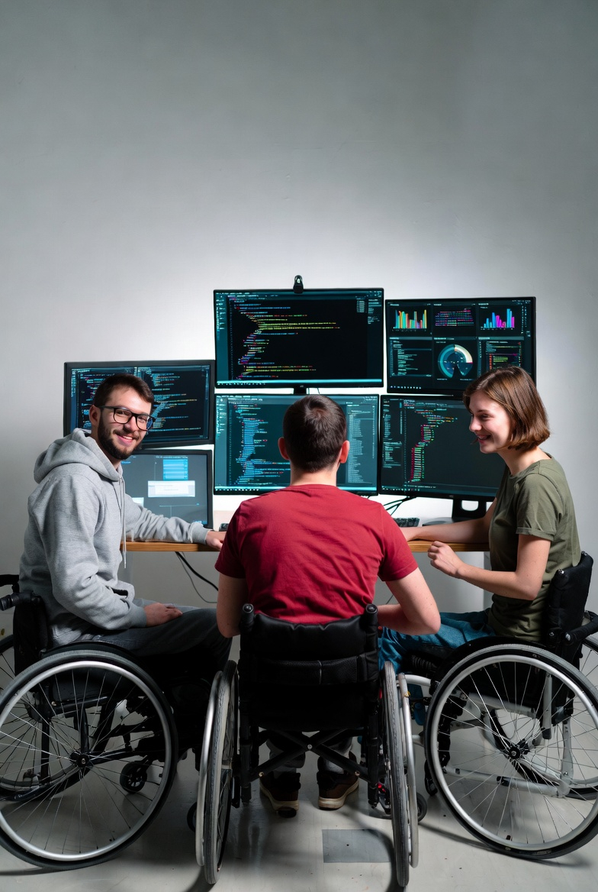

Vizual, această pagină pare identică cu cea accesibilă. Totuși,
încearcă să o folosești doar cu tasta TAB sau cu un
Screen Reader. Vei observa că nu poți vedea unde este
focusul și că elementele nu mai comunică starea lor.
Prețuri Servicii
Serviciu
Durată
Preț
Audit Accesibilitate
5 zile
1500
RON
Optimizare Imagini
2 zile
500
RON
Echipa noastră

Tehnologia ne unește, iar noi suntem dedicați să o facem accesibilă
tuturor. Această imagine ilustrează perfect cum oferirea unui mediu de
lucru adaptat, inclusiv a accesului facil la tehnologii asistive și a
unui design web inclusiv, ajută echipa noastră să colaboreze eficient și
să creeze soluții inovatoare împreună.
Erori de navigare și bariere invizibile
Lipsa focusului vizual: Utilizatorul de tastatură
apasă TAB, dar nu știe unde se află "cursorul".
Elemente "Mute": Butoanele fără etichete
(aria-label) nu spun nimic unui Screen Reader.
Ordinea ilogică: Dacă ordinea de tabulare nu
respectă ordinea vizuală, utilizatorul devine confuz.
Moduri de Testare
Testare Manuală
Testarea manuală implică utilizarea directă a site-ului tău cu
echipamente de asistență și metode de navigare pe care le folosesc
persoanele cu dizabilități.
Navigare cu tastatura: Folosește TAB și SHIFT+TAB
pentru a verifica ordinea focusului.
Screen Readers: NVDA (gratuit), JAWS, sau
VoiceOver (Mac).
Zoom: Testează cu zoom la 200% și cu mod
întunecat.
Afișează ghidul complet de testare manuală
→
Testare Automatizată
Instrumentele automate analizează codul și structura paginii pentru
a identifica probleme comune de accesibilitate. Sunt rapide și
utile, dar nu înlocuiesc testarea manuală.
AXE DevTools: Extensie pentru Chrome/Firefox cu
rapoarte detaliate.
WAVE: WebAIM's tool pentru verificări vizuale și
rapoarte.
Lighthouse: Integrat în Chrome DevTools, include
audit accesibilitate.
Constrat Cheker: Un tool facut de echipa noastră
pentru verificarea contrastului
Folosind aceste instrumente în combinație cu testarea manuală, vei
asigura că site-ul tău este cu adevărat accesibil pentru toți
utilizatorii.
Afișează ghidul complet de testare automată
→
Newsletter
Interacțiuni Defecte
Un pop-up (modal) defect nu poate fi controlat în totalitate de la
tastatură.